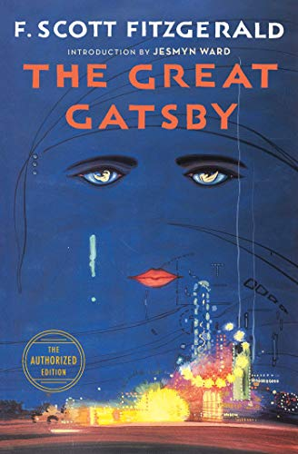

The Great Gatsby

Author: F. Scott Fitzgerald
Set in the Jazz Age on Long Island, near New York City, the novel depicts first-person narrator Nick Carraway's interactions with mysterious millionaire Jay Gatsby and Gatsby's obsession to reunite with his former lover, Daisy Buchanan.
Mathilukal
Author: Vaikom Muhammad Basheer
The theme of the novel, focusses on the love between Basheer, a prisoner, and a female inmate of the prison, who remains unseen throughout the novel. In Mathilukal, though the broad frame is autobiographical and the narration is first person, the details seem to contain sprinkles of fantasy.
Aadujeevitham

Author:Benyamin
The novel depicts the life of Najeeb Muhammed, an Indian emigrant going missing in Saudi Arabia. Najeeb's dream was to work in the Persian Gulf states and earn enough money to send back home. But, he achieves his dream only to be propelled by a series of incidents into a slavelike existence herding goats in the middle of the Saudi desert
Harry Potter

Author:JK Rowling
The plot follows Harry's second year at Hogwarts School of Witchcraft and Wizardry, during which a series of messages on the walls of the school's corridors warn that the "Chamber of Secrets" has been opened and that the "heir of Slytherin" would kill all pupils who do not come from all-magical families.
Randaamoozham

Author:M T Vasudevan Nair
The novel is a retelling of the Indian epic Mahabharata from the perspective of Bhima, the second Pandava. The story deviates from the traditional Mahabharata story as it avoids the divine elements of the ancient epic and re-represent the characters and events realistically.
Wings of Fire
Author:APJ AbdulKalam
Wings of Fire (1999), is the autobiography of the Missile Man of India and President of India, Dr. A. P. J. Abdul Kalam. It was written by him and Arun Tiwari.
Vilaayath Budha
Author:GR Indugopan
The chief characters of Indugopan’s Vilayath Buddha are Bhaskaran master, who has been growing a sandalwood tree in his yard for a personal reason, and his student Double Mohanan. The latter, who is smuggler, challenges his teacher and wants to cut down the sandalwood tree, called the Vilayath Buddha for its premium export quality.
Romeo&Juliet
Author:William Shakespeare
Romeo and Juliet belongs to a tradition of tragic romances stretching back to antiquity. The plot is based on an Italian tale translated into verse as The Tragical History of Romeus and Juliet by Arthur Brooke in 1562 and retold in prose in Palace of Pleasure by William Painter in 1567.